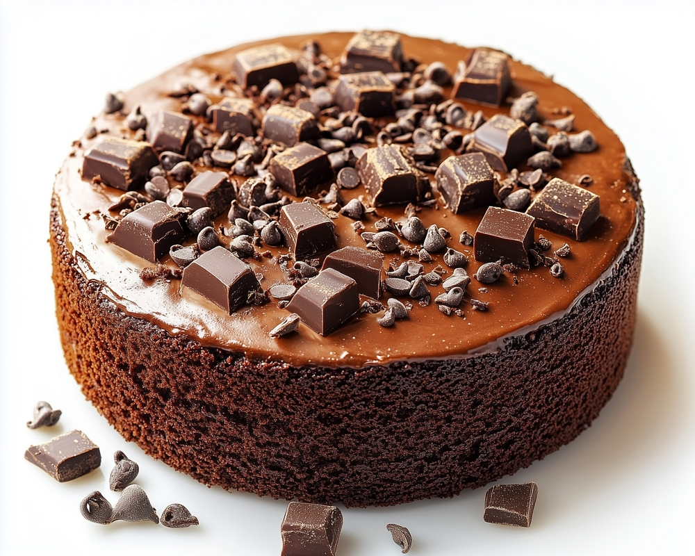

Ingridients
- 1 and 3/4 cups all-purpose flour
- 1 and 1/2 cups granulated sugar
- 3/4 cup unsweetened cocoa powder
- 1 and 1/2 teaspoons baking powder
- 1 and 1/2 teaspoons baking soda
- 1 teaspoon salt
- 2 large eggs
- 1 cup whole milk
- 1/2 cup vegetable oil
- 2 teaspoons vanilla extract
- 1 cup boiling water
Preparation Instructions
- Preheat the oven to 350°F (175°C) and grease two 9-inch round cake pans.
- In a large bowl, combine the flour, sugar, cocoa powder, baking powder, baking soda, and salt.
- Add the eggs, milk, oil, and vanilla extract. Beat with an electric mixer on medium speed for 2 minutes.
- Reduce the mixer speed to low and slowly add the boiling water. The batter will be thin.
- Pour the batter evenly into the prepared pans.
- Bake for 30-35 minutes, or until a toothpick inserted into the center comes out clean.
- Let the cakes cool in the pans for 10 minutes, then transfer them to a wire rack to cool completely.
- Frost with your favorite frosting (chocolate buttercream or whipped cream).